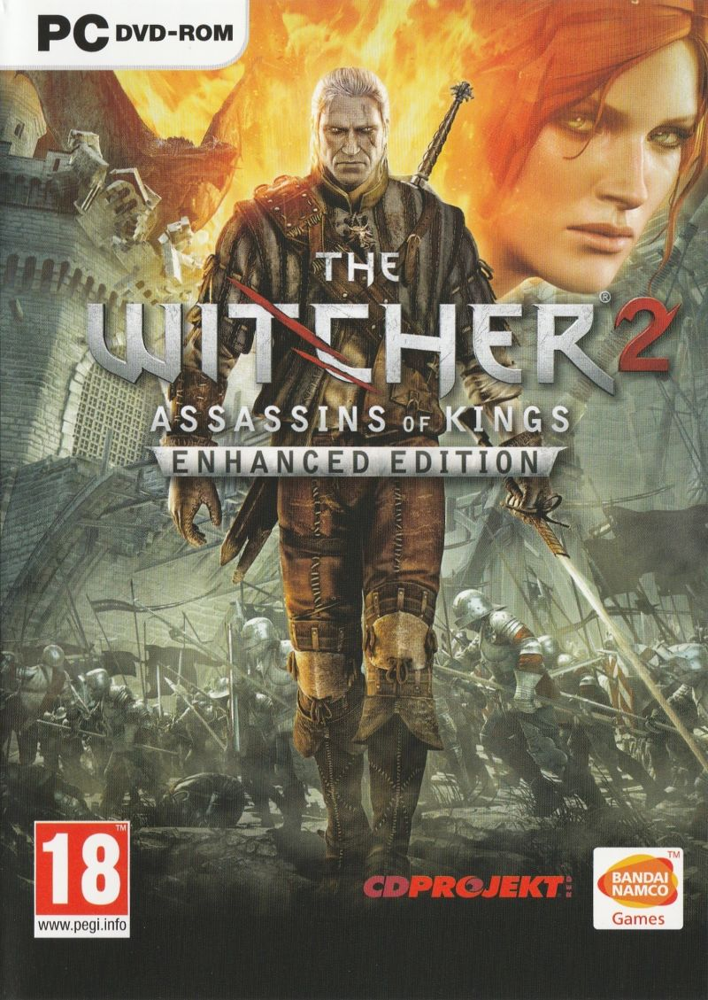

| Kiadás: | 2007.10.26 | Enhanced Edition: 2008 |
|---|---|---|
| Eladott másolatok száma: | kb. 7 millió | |
| Platformok: | PC | A konzol portok bejelentették de sose készült el |
| Díjak/Értékelések: | IGN: Best of 2007, Best RPG | GameSpy: PC RPG of the year |
PC GURU:
"Jó érzés olyan játékról írni, ami biztosan klasszikussá válik majd a saját kategóriájában. A szerteágazó történet, a karakterépítés változatossága, az élvezetes harcrendszer és a 40-60 órányi főszálas játékidő mind-mind azt mutatják, hogy a program megéri a pénzét, és ha még azt is belevesszük, hogy a nyolc darab ezres fejében egy teljesen lokalizált változatot adnak a boltban, azt kell mondanom, hogy hibái ellenére az év egyik legjobb vétele és egyben az év egyik legjobb szerepjátéka is."
| Kiadás: | 2011 |
|---|---|
| Eladott másolatok száma: | kb. 13 millió |
| Platformok: | Windows, Linux, OS X, Xbox 360 |
| Díjak/Értékelések: | Több mint 50 díj többek között legjobb grafika, történet, adaptáció és Game of The Year |
Gamekapocs:
"Üdítő formában öntötték szoborrá a The Witcher 2-t, sokszor állunk meg a semmi közepén, szemlélve a minket körülvevő gazdag és részletes, ámde groteszk világot. Nem éri meg zsörtölődni az apró hibákon, melyből technikai oldalon kívül igen kevés van, 30-40 óra szórakozás garantált. A műfaj szerelmesei fellélegezhetnek, tényleg nincs minden veszve, nem minden fejlesztő hisz a kazsuálosodásban. A CD Projekt RED ambíciói magasak voltak, pont elég lett arra, hogy az akadályt sikerrel vegyék, a The Witcher 2 a legjobbak közül való, az idei év tagadhatatlan siker-várományosa."

| Kiadás: | 2015 |
|---|---|
| Eladott másolatok száma: | több mint 20 millió |
| Platformok: | Windows, PS4, Xbox One, Nintendo Switch |
| Díjak/Értékelések: | Több mint 250 Game of The Year Award, több E3 People's Choice Award és összesen több mint 800 díj |
PC GURU:
"A Witcher 3 pontosan az a játék, amit a CD Projekt RED mindig is meg akart csinálni, csak nem volt meg hozzá a kellő erőforrás és a technológia, mostanra viszont minden összeállt – és ez leginkább a tálalásban mutatkozik meg. Ha nem volt túlzás azt mondani, hogy ez minden idők egyik legjobb szerepjátéka, akkor az sem, hogy ez minden idők egyik legszebb videojátéka."